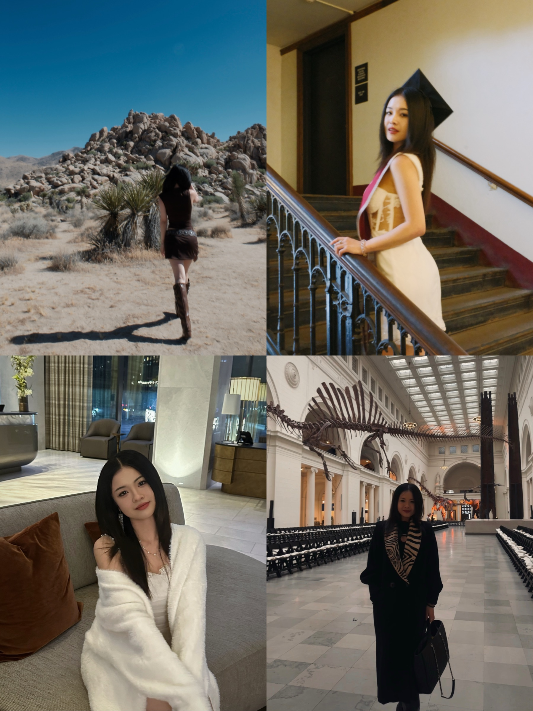

About
It's genuinely hard to describe who I am in one sentence, so here's the long version — pick whichever part you're curious about.

The Professional Me Marketer. Communicator. Life-long learner. Research-first, systems-minded, and genuinely fluent in both cultures, not just both languages.
- I start with how people actually behave, then build the marketing that meets them there — a research-first habit more than a slogan
- I've worked inside agencies, B2B teams, an institutional setting, and my own social accounts, and I'm comfortable adapting to whichever one I'm in
- Fluent with a range of marketing and content tools, from research and analytics to AI-assisted production — for specifics, see selected work
Me at School Sociology major who kept getting pulled into anything with a camera, a spreadsheet, or a client attached.
Education
- B.A. Sociology, Media Arts & Design minor — Summa Cum Laude, Phi Beta Kappa, Gary Becker Scholar, Class of 2026, University of Chicago
- Master in Management (MiM), Marketing concentration, Booth School of Business, starting Aug 2026
- Coursework ran from Text Mining in R and Statistics with Python to Web Design and AI + Video — the quantitative and the creative, learned side by side
- Also completed Regression Analysis, rounding out a stats-heavy elective mix alongside the sociology core
- Selected for the Humanities UX Career Program, a selective track connecting humanities training to UX and product thinking
What I Do in My Leisure Time Mostly: cooking, traveling, and pretending I'm not going to overplan the itinerary again.
- I travel whenever I can — with family, with friends, or by myself. I treat it as a great way of learning, on top of school. Many of these travels are documented in my artwork.
- Cook most of my own meals — it shows up in the food account, but it started long before that
- Genuinely curious about what makes people from different cultures click (or not) — which is probably why this career path made sense in the first place